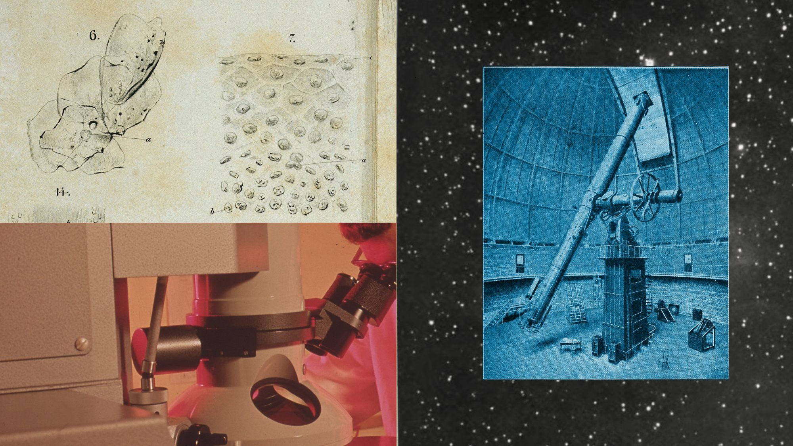
本次AI for Science扩展公告的官方插画。
Anthropic扩展科研免费额度合作
来源: Anthropic · 2026-10-28（原文仅日期） · 原文链接
Anthropic公布AI for Science项目扩展，与20家基金会、研究机构和团队合作提供免费Claude额度。该项目始于2025年5月，本次新增的是机构合作层；与HHMI Janelia合作的实验室仪器接口标准MHS仍属研究预览。公告提到的科研提速是合作案例与机构自述，不构成已完成的临床或科学验证。
Janet 锐评：
免费额度能缓解一部分试验成本，机构合作还能让数据集、软件和仪器接口被更多研究者复用。研究问题、实验设计与复核责任依然在科学家手里，额度发出去与发现做出来之间还有很长一段路。
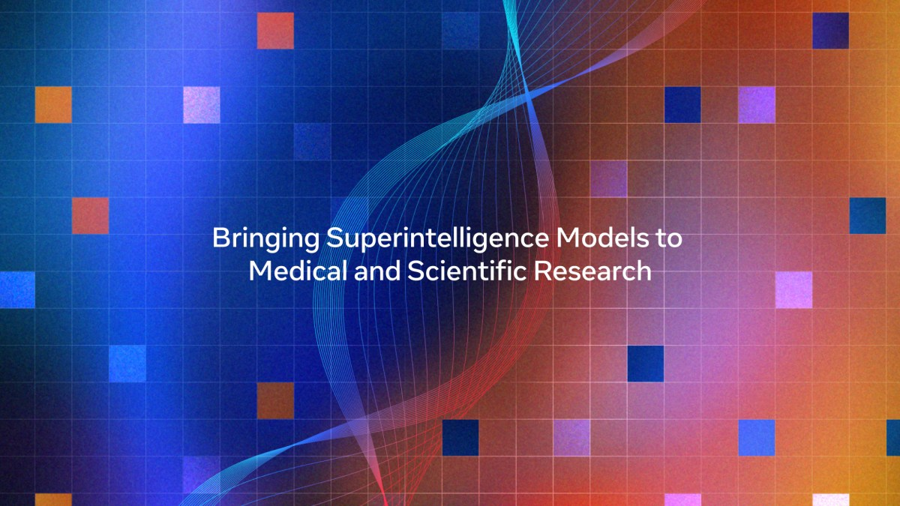
Meta本次五所大学科研合作公告配图；不代表项目已获临床批准。
Meta给五所大学模型与科研资助
来源: Meta · 2026-10-29 01:00（台北） · 原文链接
Meta宣布与加州理工、俄亥俄州立大学医学院、路易斯安那州立大学、印第安纳大学和UTHealth Houston合作，提供合计200万美元资助及模型访问。项目包括婴儿气切管脱落检测、失智症对话适配与心衰风险研究；气切监测已有概念验证，其余研究仍在推进，不能写成已获临床批准的诊疗产品。
Janet 锐评：
婴儿无法呼救、老人对话节奏不同，都是通用聊天榜单覆盖不到的真实问题。资助的价值取决于这些差异有没有进入数据、评估和临床流程，而不只是论文里多一个大模型名字。
Insurify此前公布的ChatGPT比价界面资料图，非本次Gateway界面；图中示例价格不代表当前报价。
Insurify开放代理比价的三种接口
来源: Insurify · 2026-10-28（原文仅日期） · 原文链接
Insurify推出AI Agent Gateway，以MCP服务、网站内WebMCP工具和代理专用网页连接同一保险市场，提供实时可比报价。参与代理须通过获准的集成识别身份，并保留消费者同意、保障范围、免赔额和承保商披露；用户仍可转到保险公司复核并完成投保。WebMCP是拟议网页标准，不意味着所有浏览器已自动支持。
Janet 锐评：
低保费如果抹掉免赔额和保障范围，就只是更快地制造误解。代理比价的产品质量，会体现在同意如何取得、条件怎样并排呈现，以及用户是否始终知道自己在买什么。
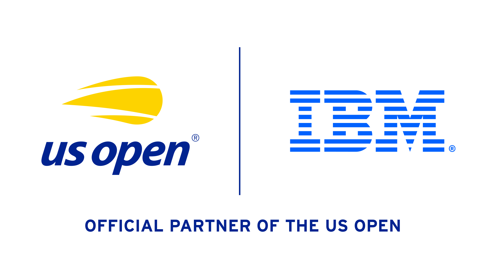
本次IBM与USTA续约公告采用的官方合作标识。
IBM续签美网AI与云合作至2031年
来源: IBM / USTA · 2026-10-28（原文仅日期） · 原文链接
USTA与IBM续签五年合作，IBM将继续担任美国网球公开赛官方AI与云合作伙伴至2031年。双方披露2026年官网及App合计超过2.7亿次互动，并列出本届已推出的Live Updates、Key Moments及Serve Quality。此次新闻是续约，不能把已有赛事功能重写为当天首次上线；互动次数也不是独立用户数。
Janet 锐评：
一场球赛最有用的信息可能只是这一分为什么关键。长期合作积累的数据和赛事语境，能帮助回答这种小问题；2.7亿次互动说明触达规模，却还不能单独证明AI功能增加了多少满意度。
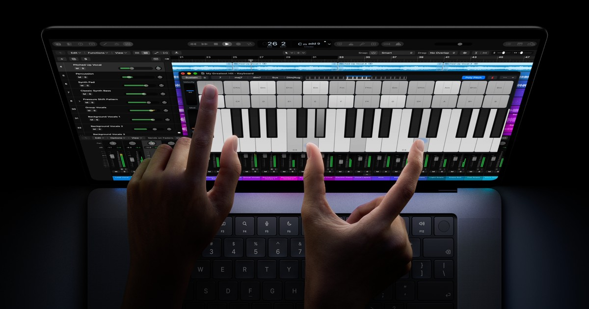
Apple本次PROLED XDR触控MacBook Pro官方产品图。
MacBook Pro首次加入触控与OLED屏
来源: Apple · 2026-10-28（原文仅日期） · 原文链接
Apple发布14及16英寸MacBook Pro，采用PROLED XDR串联OLED屏，并首次在Mac加入触控；搭载M5 Pro或M5 Max，最高128GB统一内存，配合macOS 27与Siri AI。美国起价分别为2899与3399美元，10月28日开放预订、11月6日开始交付。它与前一日公布的14英寸M6机型是不同产品，不应混写芯片或价格。
Janet 锐评：
对剪辑师和设计师，直接触碰时间线、画布与三维物体，改变的是操作距离。屏幕更亮、内存更大也很诱人，但本地模型能不能跑得舒服，仍受量化精度、上下文和散热约束。最高配置的容量不能替所有模型作性能承诺；下一步最有说服力的证据，会是连续一整天的真实创作工作，而非发布页上的峰值参数。
Gemini 4 Carbon本次官方发布配图。
Google限量开放Carbon安全模型
来源: Google · 2026-10-29 01:00（台北） · 原文链接
Google发布Gemini 4 Carbon，首批经Fairwind Program面向部分网络防御伙伴，广泛开发者、企业与消费者访问仍待后续开放。官方引用Artificial Analysis新版v5.0指数59分，并公布漏洞发现、修补与长程编程表现；内部安全评测属于厂商数据。预告入门价为每百万输入2美元、输出10美元，优惠结束后为4与20美元，不能写成永久定价。
Janet 锐评：
榜单第一与人人可调用之间，隔着一次有意收窄的上线。安全模型越能跨多步完成工程任务，越需要明确它能碰哪些代码、谁接受补丁以及怎样撤销。Carbon当前的产品事实是受控试用：指数分数和内部攻击测试都不能推出对真实系统永远安全，也不能把预告价格当作已经开放的公共API账单。
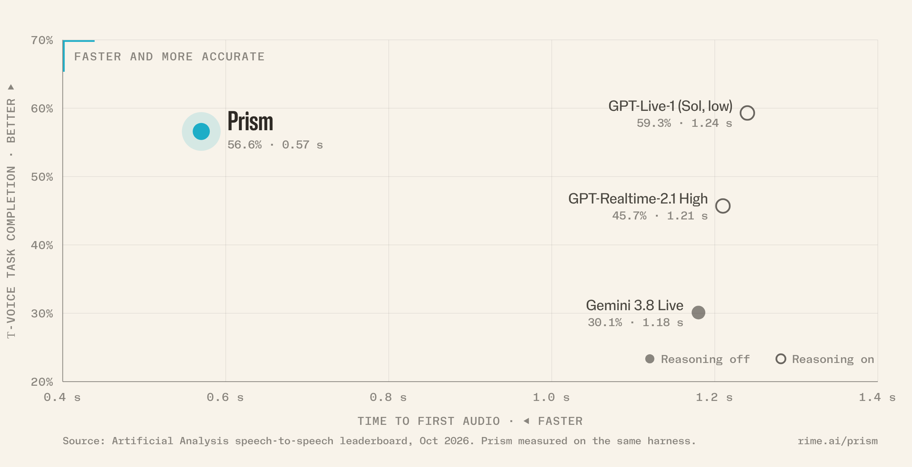
Prism公告中的厂商评测比较图，数据为Rime自报。
Prism先输出可检查文字再发声
来源: Rime · 2026-10-28（原文仅日期） · 原文链接
Rime发布面向企业语音代理的Prism，端到端处理听、写与说，同时在语音输出前保留可检查、可改写的文字层，工具调用可与说话并行。公司在自跑的τ-Voice测试中报告56.6分及0.57秒首音频延迟；这些是作者自报结果。自助强化学习与监督微调API仍在与测试客户建设中，并非已全面开放。
Janet 锐评：
电话里的半秒等待很短，一句说错的话却可能直接改变订单。保留开口前的文字检查点，给业务规则、人名发音与动作确认留下了实际插口。代价是企业仍要设计好哪些内容拦截、何时确认、失败怎样转人工；厂商自跑分数更适合当测试起点，最终还得放进自己嘈杂、打断频繁的电话录音里验收。
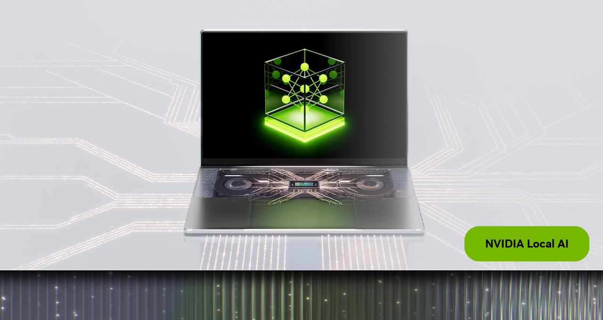
NVIDIA本次端侧AI更新公告配图；不是转写准确率的独立测试。
Nemotron新语音模型合并转写与翻译
来源: NVIDIA · 2026-10-28 23:00（台北） · 原文链接
NVIDIA推出开放权重Nemotron 3.5 Transcribe，以可提示的单模型处理录音转写、说话人标记、翻译及音频问答，支持40种语言，约43亿活跃参数。权重已上Hugging Face；公告称量化版本将随后提供，并列出NeMo-Speech.cpp或vLLM部署路径。当地端侧硬件支持计划与已经可下载的权重须分开看，不能宣称所有量化版都已就绪。
Janet 锐评：
会议整理最烦的往往是先辨认谁说话，再把同一段音频送去翻译。合并模型减少了流程接缝，但专业名词、重叠发言和引用原句的准确性，仍比一份流畅摘要更决定它能否进入正式纪要。
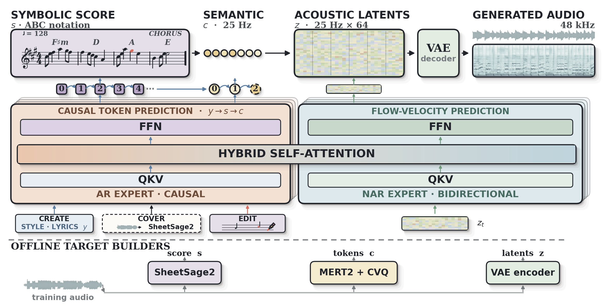
上游YuE2模型的架构图，用于说明转换版的源模型；不是MLX转换速度测评。
社区转换版将YuE2音乐模型接入Mac
来源: Hugging Face · mlx-community · 2026-10-29 00:29（台北） · 原文链接
mlx-community上传YuE2-3B的独立Swift-MLX转换权重及配套VAE，源模型来自M-A-P，并非当天新基础模型。模型卡给出歌词与风格生成歌曲、可编辑ABC乐谱的接口，bf16骨干约7.26GB；速度和内存均为转换作者自报。许可保留非商业限制及上游个人创作者例外，公司商业使用仍需向权利方取得许可。
Janet 锐评：
本地生成配乐多了一条Mac路径，扩展名换好却不等于版权问题消失。个人创作例外、企业接单和收费托管服务适用条件不同，歌词与翻唱的原作品权利也不会随模型下载一并取得。
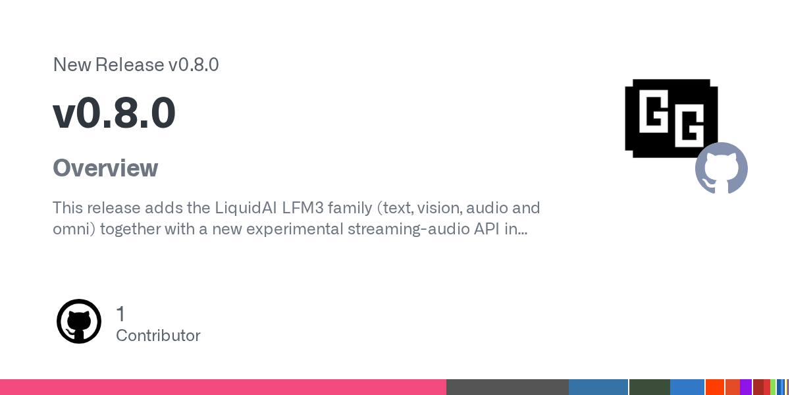
本次GitHub版本发布卡片，非运行截图。
llama.cpp接入流式音频与实时端点
来源: GitHub · ggml-org · 2026-10-28 20:47（台北） · 原文链接
llama.cpp发布v0.8.0，加入LFM3文本、视觉、音频和全模态支持，以及实验性的mtmd流式音频接口；服务端新增/v1/realtime和/tts端点。版本同时调整音频生成状态、专家缓存及多个后端，现有集成须留意API变化。它是当天正式软件版本，不是又一次发布LFM3基础模型，实验接口也不保证向后兼容。
Janet 锐评：
端侧模型只有进入稳定的加载器和服务接口，才方便被字幕、录音和桌面工具调用。实验API意味着集成者还会遇到变化，锁定版本和保留可回退路径，比追着每个自动构建编号更新更省心。
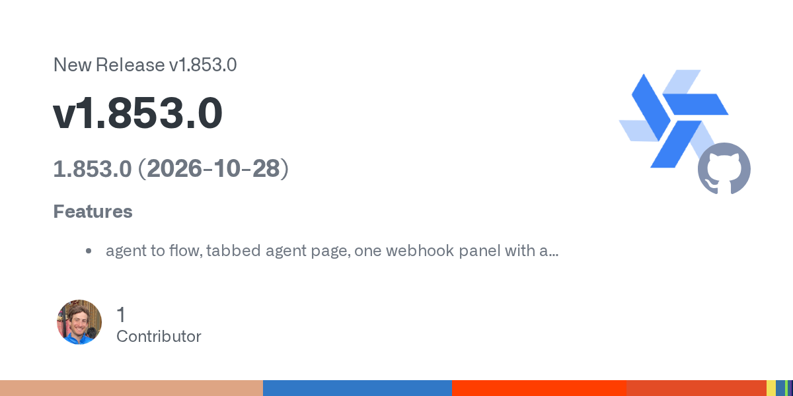
本次GitHub版本发布卡片，非运行截图。
Windmill将代理任务接入流程编辑
来源: GitHub · Windmill · 2026-10-29 06:11（台北） · 原文链接
Windmill v1.853.0发布说明新增agent to flow、标签式代理页面及统一webhook面板，并改进脚本模块缓存和日志掩码匹配。本条采用当天正式GitHub Release补充开发动态，所述范围以发布说明为限；没有独立端到端速度测评，也不能据此宣称所有自然语言任务都能可靠变成生产流程。
Janet 锐评：
代理草稿能接到流程编辑器，才有机会看清输入、分支与触发条件。可视化并不会替执行权限和错误处理作决定，软件提供的是整理任务的入口，业务仍得为每一步的结果负责。
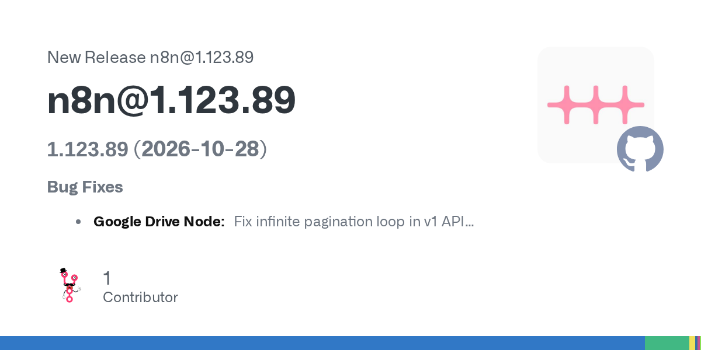
本次GitHub版本发布卡片，非运行截图。
n8n发布旧版MCP会话泄漏修复
来源: GitHub · n8n · 2026-10-28 15:28（台北） · 原文链接
n8n在1.123.89维护版修复MCP Server Trigger空闲会话未回收导致的内存泄漏，以及Google Drive v1请求中的无限分页循环。该版本发布于窗口内，属于旧分支的实际修复，不是n8n 3.0新功能。公告未给出泄漏规模、受影响部署数量或攻击利用证据，不宜自行补成安全事件。
Janet 锐评：
自动化常在演示里跑一次，在服务器上却要跑几个月。空闲会话回收和分页终止条件看起来琐碎。它们恰好决定工作流会不会越跑越占内存、直到没人知道它什么时候停了。
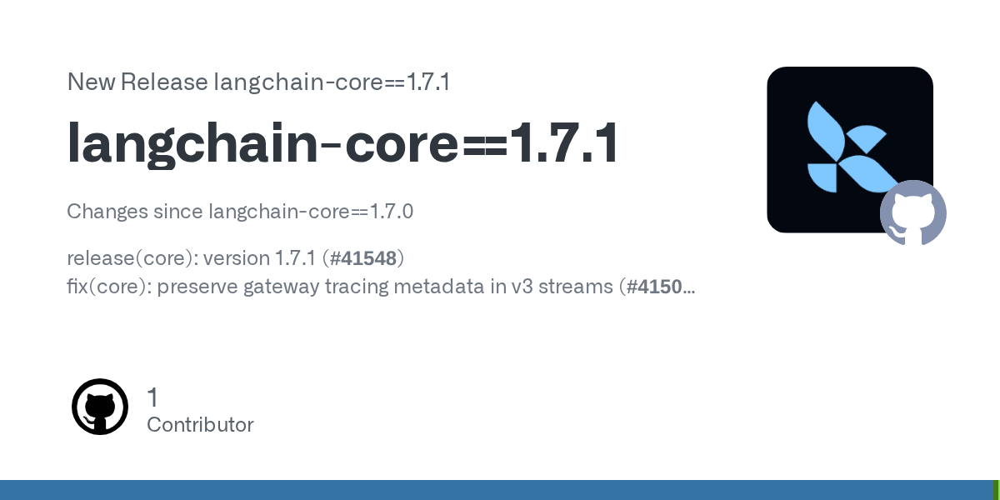
本次GitHub版本发布卡片，非运行截图。
LangChain发布流式追踪信息修复
来源: GitHub · LangChain · 2026-10-28 23:00（台北） · 原文链接
LangChain Core发布1.7.1，修复v3流式响应中网关追踪元数据的保留，并为Mermaid标签中的节点元数据加入转义处理。发布说明还列有依赖更新；本次属于核心库补丁，不是新模型或新的整套代理框架。追踪信息完整有助于排查调用链，但这条变更本身不能证明业务成本或成功率改善。
Janet 锐评：
排查一条长工作流，最怕结果还在、调用从哪里来却丢了。元数据补回之后，定位链路才少一点猜测；修复是否覆盖自己的网关和流式组合，仍可以用一次实际故障回放来确认。
今日核心预测
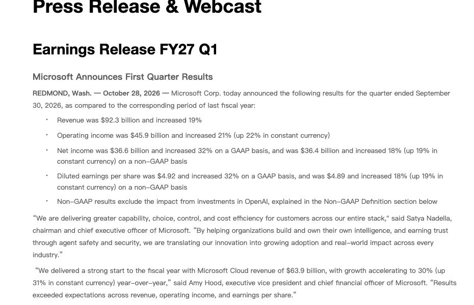
微软本次FY27 Q1财报原始页面截图，保留季度、日期及报告口径。
微软云营收增三成并披露季度财报
来源: Microsoft Investor Relations · 2026-10-29 04:08（台北） · 原文链接
微软发布截至9月30日的2027财年第一季度结果：营收922.79亿美元，同比增长19%；微软云营收639亿美元，增长30%，Azure增长48%。GAAP净利润366.29亿美元，增长32%，剔除OpenAI投资影响后的非GAAP净利润增长18%。同期现金流表中的物业及设备购置393.67亿美元，这不是全部AI开支，也不包含所有租赁口径。
Janet 锐评：
云增长和投入同时扩大，单看其中一边都容易读偏。尤其OpenAI投资损益改变了净利润同比，经营扩张的速度与投资账面变化应分别看，才能理解财报里两组不同的增长数字。
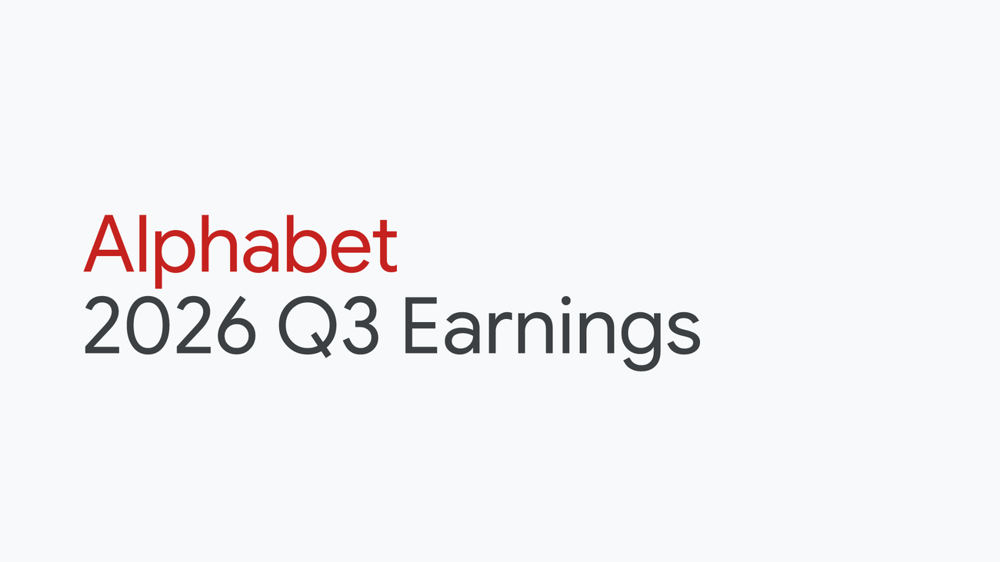
Google本次Q3 2026财报官方配图。
Alphabet披露云营收翻倍与用量增长
来源: Google / Alphabet · 2026-10-29 05:05（台北） · 原文链接
Alphabet公布第三季度财报相关CEO发言：公司营收同比增长25%，Google Cloud增长103%；第一方模型API每分钟处理接近320亿token，环比增加40%，Gemini应用用户达到10亿。上述用量和产品表现为管理层披露，不能直接换算成付费用户或单位利润；CEO也表示正增加供给满足长期需求。
Janet 锐评：
token用量和云收入同步上升，比单独一个下载量更能说明需求。两条曲线仍没有回答每一单位服务赚多少，推理成本、折扣和新增设备的折旧，会继续决定这场扩张的经济效果。
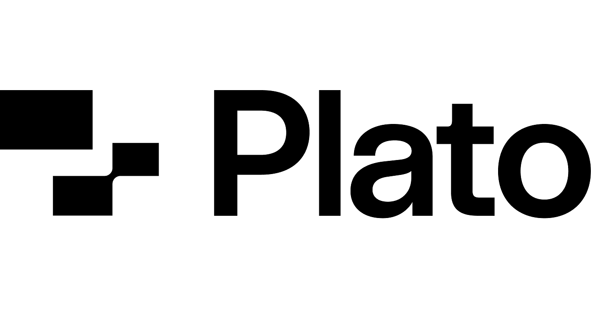
Plato随本轮融资公告提供的公司标识。
Plato融资1600万美元训练工作代理
来源: Plato Technologies / PR Newswire · 2026-10-28 21:17（台北） · 原文链接
Plato宣布1600万美元A轮融资，由Nava Ventures领投，Gradient Ventures、Transpose Platform及Mustafa Suleyman等参与，累计融资1900万美元。公司为AI实验室搭建可重置的模拟工作环境，覆盖客服、人事、财务与医疗行政，用于强化学习和评估。融资是当天新公告；模拟环境中的完成率不能直接当作真实企业部署表现。
Janet 锐评：
练习下单时不花真钱，练习改档时不动真实病历，这类环境有很具体的购买理由。难点是把权限边界、异常输入和业务后果也做进训练，而非只复制几个软件按钮。融资投向训练场，说明模型之外还有一层劳动密集的环境建设；它最终的质量，要看代理换到真实系统后，多少习惯仍然有效。